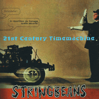

Stringbeans - 21st Century Timemachine (Album, 2002)
01 - Talkin' Head (2:33)
02 - 21st Century Time Machine (2:32)
03 - My Eastern Car (2:57)
04 - Madhouse (Baby) (3:05)
05 - Great Swindle Thing (2:25)
06 - Psychoville (3:39)
07 - High Heels On (3:27)
08 - Whining Song (3:23)
09 - Let's Make A Deal (3:10)
10 - Lost In The City (2:40)
11 - To Outer Space (3:05)
12 - String Along (0:38)
13 - Bean Bag (1:58)
14 - Beauffant Lady (2:31)
15 - Safe Sex Girl (3:53)
16 - Metamorphosis (2:21)
17 - Smell Of Kat with hidden track Stringbeans Boogie (8:14)
© Bluelight Records :: [Bluelight Records]
Notes
Tampere, Finland.
Compilation album release. 5 new songs, 4 alt versions, 4 new mixes, 2 vinyl only songs
reference information: Discogs®
Review
132/366 (Project 366)
Modern Rockabilly and Psychobilly sound with full hand of experiments.